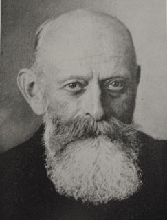

|  |
Wilbrand 's knee = a group of crossed inferior quadrant extramacular ganglion cell axons extending forward into the posterior optic nerve. It is thought to be the anatomic substrate for the superior quadrantic visual-field defects in the contralateral eye found in some posterior optic nerve lesions. However, the existence of this is now questionable, some anatomists think this is a post-mortem artefact.
Hermann Wilbrand was the son and grandson of physicians. His grandfather was Johann Bernhard Wilbrand (1779-1846), professor of anatomy, comparative anatomy, physiology and natural history at Giessen; his father was Franz Joseph Julius Wilbrand (1811-1894), an expert in forensic medicine.
Wilbrand Studied at Giessen and Strassburg, where he obtained his doctorate in 1875. Now concentrating his efforts in ophthalmology, he was assistant in the eye clinic in Strassburg under Ludwig Laqueur (1839-1909) and in Breslau under Carl Friedrich Richard Förster (1825-1902). In 1879 he settled in Hamburg, where became head of the ophthamological department of the Allgemeines Hospital in 1905 and in 1919 was appointed o. professor of eye medicine. Later he became emeritus.
Wilbrand devoted his life to the study of physiology and pathology of vision, especially the visual pathway and cortical representation and projection. He showed homonomous hemianopia to be due to lesions in the optic radiations and occipital cortex as well as the optic tract and discredited the German physiologist Friedrich Leopold Goltz’ (1834-1902) old theory of the visual centres being subcortical.
References: